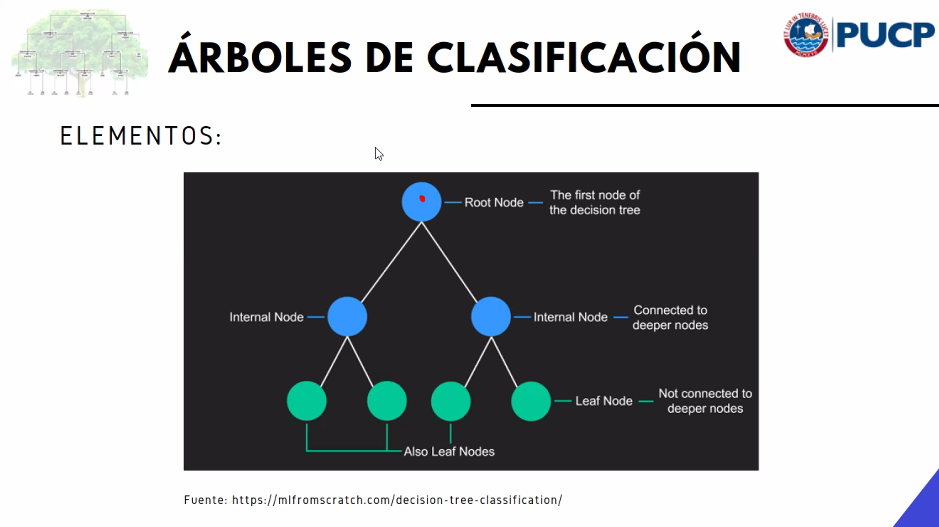
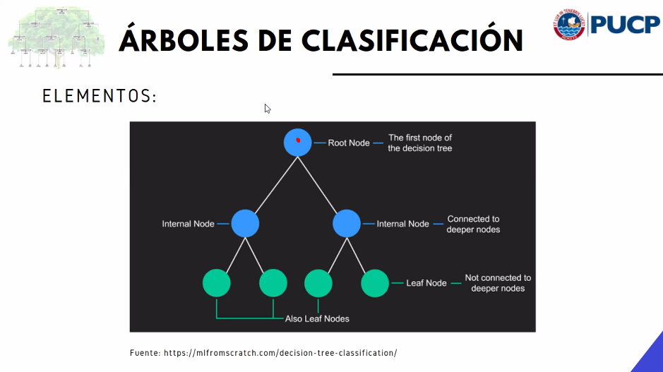

knitr::include_graphics("images/arbol-de-clasificacion.png")
Objetivo: Choosing the suitable Data Mining task
En este paso, ya tenemos los datos limpios, transformados, sin vacíos ni outliers.
Usamos variables específicas del dataset para predecir valores desconocidos o futuros de una o varias variable(s) (numérica(s) o categórica(s)) de interés.
Analizamos eventos pasados para entender el presente (no el futuro). No necesariamente busca predecir valores,
Permite mejorar el rendimiento de un proceso sujeto a restricciones.
La data es pre categorizada o numérica.
Requiere de un target, nombre de la variable objetivo.
Incluye modelos de clasificación y regresión.
La data no está labelled en alguna manera.
Incluye clustering, dimension reduction y association.
Dimension reduction suele usarse solo para variables numéricas.
No siempre es necesario aplicar reducción de dimensiones. Pero, en un caso como dataset tiene muchas columnas y pocas filas, sí debe aplicarse.
La reducción de dimensiones suele aplicarse en dos casos excluyentes:
No tiene sentido aplicar ambos casos de reducción de dimensiones para una misma data.
FALTA PEGAR PICS DEL PDF EDITADO POR SENSEI
Se utiliza en análisis supervisado para target categórico.
Clasificar hace referencia a predecir un target categórico.
knitr::include_graphics("images/arbol-de-clasificacion.png")
Root node
Variable que discrimina mejor las categorías de Y.
Cada fila del árbola consiste del 100%
Se basa en la proximidad de las instancias.
Clasifica instancias según categoría de K-vecinos.
Clasifica instancias según frontera de desición.
Maximiza la menor distancia a la frontera.